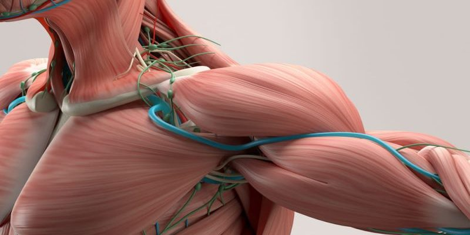
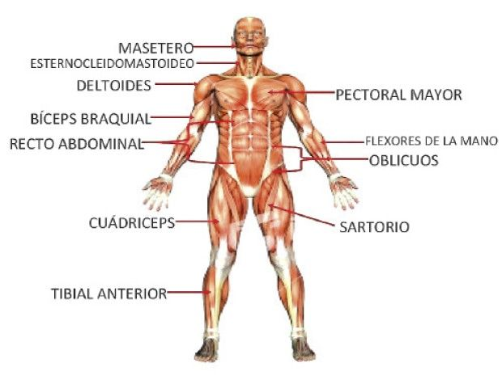

¿Qué es el sistema muscular?
El sistema muscular es el conjunto de tejidos del cuerpo encargados del movimiento, la estabilidad y la generación de calor. Consta de más de 600 músculos que trabajan de manera coordinada con el sistema nervioso y el sistema esquelético para facilitar la movilidad del organismo. Los músculos están compuestos principalmente de fibras musculares que, al contraerse y relajarse, permiten el movimiento y otras funciones vitales.

Clasificación de los músculos
- Músculo esquelético: Responsable del movimiento voluntario del cuerpo, se une a los huesos a través de los tendones. Permite actividades como caminar, correr y levantar objetos.
- Músculo liso: Se encuentra en las paredes de los órganos internos como el estómago, los intestinos y los vasos sanguíneos. Su función es involuntaria y contribuye a la digestión, la circulación y otras funciones automáticas del cuerpo.
- Músculo cardíaco: Exclusivo del corazón, se contrae rítmicamente para bombear sangre a todo el cuerpo. Su funcionamiento es autónomo y está regulado por el sistema nervioso.

Funciones del sistema muscular
- Movimiento: Permite la locomoción y el desplazamiento del cuerpo.
- Postura y equilibrio: Mantiene la alineación del cuerpo y permite la estabilidad.
- Producción de calor: La contracción muscular genera calor, contribuyendo a la termorregulación.
- Circulación sanguínea: Los músculos ayudan a bombear la sangre, especialmente los músculos esqueléticos en las extremidades.
- Protección de órganos internos: Algunos músculos actúan como barreras de protección para órganos vitales.
Estructura y funcionamiento del tejido muscular
El tejido muscular está compuesto por fibras musculares, que a su vez contienen proteínas contráctiles como la actina y la miosina. Estas proteínas interactúan para producir la contracción muscular. Dependiendo del tipo de músculo, las fibras pueden ser de contracción rápida (para movimientos explosivos) o de contracción lenta (para actividades de resistencia).
Enfermedades y trastornos musculares
- Distrofia muscular: Enfermedad genética que provoca la degeneración progresiva de los músculos.
- Calambres musculares: Contracciones involuntarias y dolorosas de un músculo o grupo muscular.
- Fibromialgia: Trastorno que causa dolor muscular generalizado y fatiga.
- Sarcoopenia: Pérdida de masa muscular debido al envejecimiento.